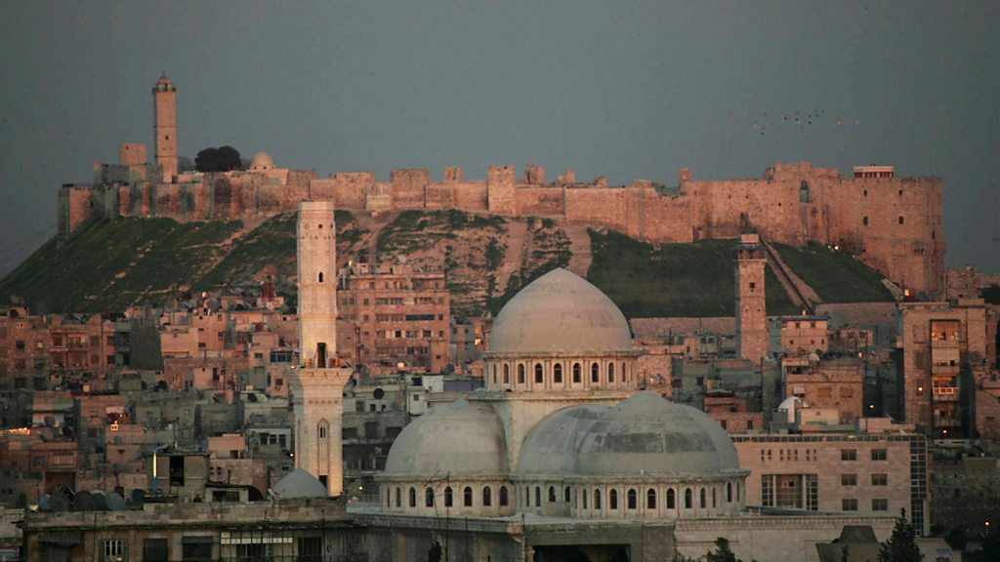
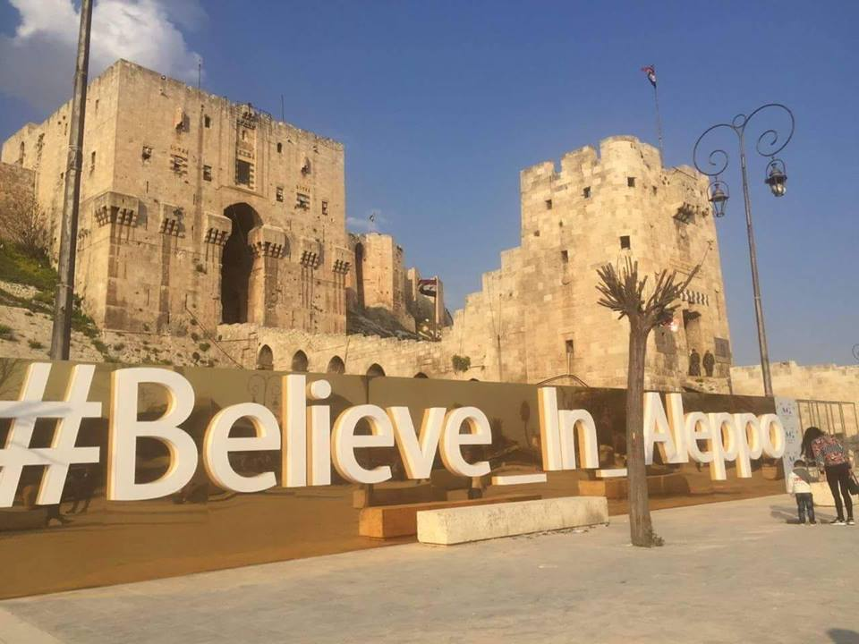
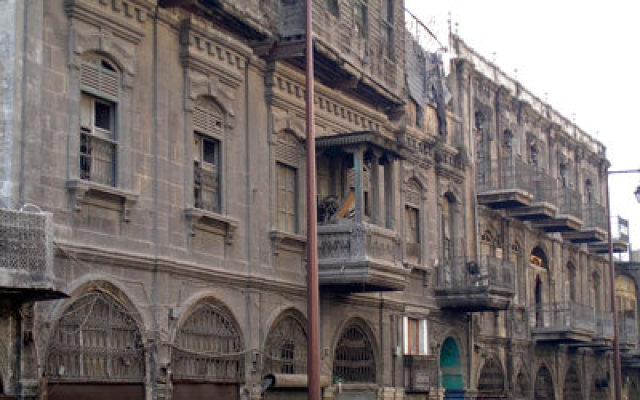
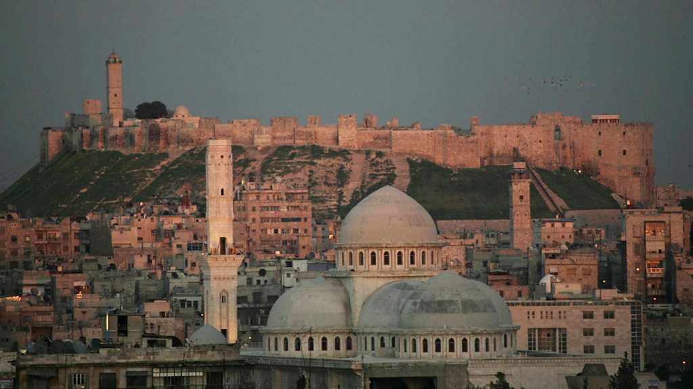
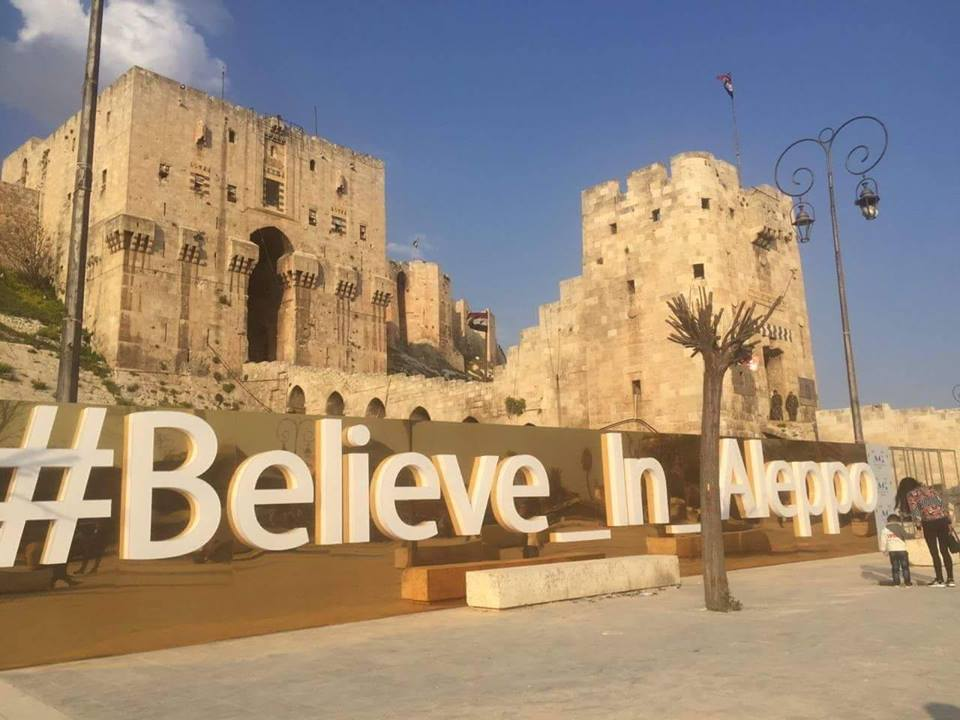
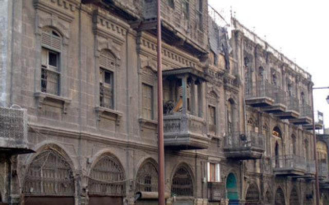

Suriye'nin kuzeybatısında yer alan halep benim güzel memleketim'dir. suriye'nin başkenti olan şam'dan 310 cm uzaklık'ta yer almakta'dır.Halep 4,6 milyonu aşan resmi nüfusu ile nüfus sayısı bakımından Suriyenin en büyük şehir'dir.Aynı zamanda Suriye'nin ekonomik başkenti olarak kabul edilir.Halep'te mutlaka görülmesi gereken yerler var (Halep Kalesi,Büyük Emevi Camii, Halep Ulusal Müzesi,Halep'in eski pazarları,Kırk Şehitler Kilisesisebil bahçesi,) gibi bir çok eseri ve güzel yerler vardır.biraz da halep kalesinden söz edelim halep kalesi dünyada en büyük kalelerden biri sayılır Şehir merkezinde bir tepe üzerinde yer almaktadır.Yapımı MÖ 1. binyıla kadar uzanıyor.İçerisinde birçok bina, kilise, cami, salon ve tiyatro bulunmaktadır.Birçok kral ve liderin gücünün merkeziydi.Büyük Emevi Camii ise Bin yedi yüz on beş yılında Emevi Halifesi Velid bin Abdül Malik tarafından yaptırılmıştır.İnşaatı Süleyman bin Abdul Malik döneminde tamamlanmıştır.